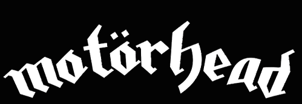

Hola mis queridos Reyes!!!!
Quiero hablarles de la gran y espectacular banda

ASI QUE TOMEMOS UN POCO DE JACK DANIEL'S Y VEAMOS ESTA HISTORIA
NACER PARA PERDER
Surgidos a mediados de los años 70, Motörhead, liderados por su frontman y bajista Lemmy Kilmister, fan de los Beatles, roadie de Jimi Hendrix y miembro de Hawkwind, fue uno de los nombres clave en el hard rock acelerado, iterativo, potente; una banda británica significativa dentro del heavy metal de los años 80 que retomó con amplificación sonora y sudoración escénica las constantes más básicas del rock’n’roll, ejecutadas con rapidez, redundancia abrasiva, destreza, indocilidad sónica.
Lemmy, de nombre real Ian Fraiser Kilmister, nació el 24 de diciembre del año 1945 en Stoke-On-Trent, Staffordshire (Inglaterra), hijo de un sacerdote que abandonó a su madre cuando el pequeño Ian solamente contaba con unos pocos meses de edad.
Desde su adolescencia se sintió inclinado a la formación de un grupo de rock.El primer disco que compró en su vida fue el “Knee Deep In Blues” de Tommy Steele.En su juventud Lemmy admiraba a gente como Chuck Berry, Little Richard, Elvis Presley, The Who o The Beatles, banda a la que contempló con asiduidad en The Cavern.
Paradójicamente, Lemmy siempre afirma que los Beatles son una de las grandes bandas de la historia por su diversidad, característica poco significada en Motörhead, recayendo sus sonidos en la potencia de su instrumentación y en la agresividad de su característica vocalidad, vinculada a su pronunciada personalidad, una de las más carismáticas en el mundo del rock.
REY DE REYES
Lemmy venía de ser bajista en la banda Hawkwind, de la que fue despedido tras ser arrestado en Canadá por posesión de drogas. Tras esta experiencia, decidió montar una nueva banda. El nombre de Motörhead proviene de la última canción que creó para su anterior banda.
Junto a Larry Wallis y Lucas Fox, realizaron sus primeros ensayos en los estudios Sound Management, en Kings Road, Chelsea, en 1975.
En julio de ese mismo año actuaron junto a la banda de rock progresivo Greenslade, tocando en el Roundhouse. La mismo hicieron con Blue Öyster Cult en el Hammersmith Odeon, en octubre del mismo año.
Fichados por United Artists, comenzaron a grabar sus primeras sesiones en los Rockfield Studios en Monmouth, junto al productor Dave Edmunds. Allí comprobaron que Fox no era fiable para una banda seria, por lo que fue sustituido por el batería Phil "Philthy Animal" Taylor. El material grabado no obtuvo la calidad requerida por la productora y no llegó a publicarse.
En la primavera de 1976 se les unió un amigo de Taylor, el guitarrista "Fast" Eddie Clarke, con lo que quedaba conformada la formación clásica de Motörhead, con Lemmy, Clarke y Taylor.
VIVIR PARA GANAR
A partir de este momento y hacia delante podemos hablar de una de las bandas que han sentado las bases para muchos de los grupos de heavy metal y otros estilos de hoy en día.
En sus más de 30 años de carrera nos han dejado un total de 26 producciones de larga duración que han marcado un hito en la historia del Rock en general, o preferentemente del “Rock and Roll” como le gusta decir a Lemmy.
Su temática basada en extremos como la guerra, el sexo sin control, la vida de carreteras, el cuero y las tachas aunados a las motocicletas veloces y los disparos en general, han sido simplemente un disparador de toda la cultura heavy alrededor del mundo.
Su primer álbum “Motörhead” salió a la venta en 1977 y a partir de ese entonces no se detuvieron casi nunca: en 1979 tenemos "Overkill"; también ese mismo año lanzaron "Bomber" y "On Parole".
El comienzo de los ‘80s dejó por sentado que Motörhead había nacido para quedarse, cuando lanzaron “Ace of Spades” en 1980. Luego le siguieron “No Sleep 'til Hammersmith” en 1981; “Iron Fist” en 1982; “Another Perfect Day” en 1983; “No Remorse” en el ’84, “Orgasmatron” en el ’86; “Rock and Roll” en 1987 y finalmente “No Sleep at All” en 1988 para terminar una década llena de éxitos.
LA CAIDA DEL REY
El vigesimosegundo álbum de la banda salió el 28 de agosto de 2015, siendo este Bad Magic, álbum que resultaría ser el último que haría la banda ya que meses después, la banda sería disuelta por la muerte de su frontman y líder Lemmy Kilmister.
El 11 de noviembre de 2015, murió Phil "Philthy Animal" Taylor, la muerte fue provocada por una insuficiencia hepática.
Y aquí no terminaron las muertes para miembros de la banda, ya que después su propio líder se vería afectado.
El 1 de septiembre de 2015, Lemmy Kilmister detuvo el concierto en Austin luego de tocar 3 temas y anunciar el siguiente, exclamando "no puedo hacerlo". El 28 de diciembre de 2015, falleció en su hogar a consecuencia de un cáncer diagnosticado tan sólo unos días antes.
Mikkey Dee anunciaría posteriormente la cancelación del resto de la gira del grupo, la cancelación de nuevas grabaciones y la disolución de Motörhead.
Lemmy Kilmister y Phil Taylor serían homenajeados y posteriormente moriría su compañero y ex-guitarrista de la banda Eddie Clarke, en el año 2018, debido a una neumonía, marcando así la muerte de todos los miembros clásicos de la banda, que grabarían algunos de los discos más reconocidos y que llegan a ser considerados como la primera alineación oficial, ya que fue la que participó en el álbum debut.
Y asi es como un gran legado de Rock “N” Roll llega a su fin.
y nunca lo olviden, si quieren apostar, siempre haganlo con un as de picas.